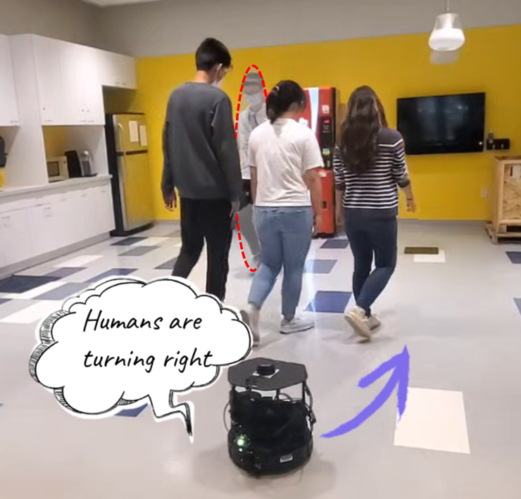
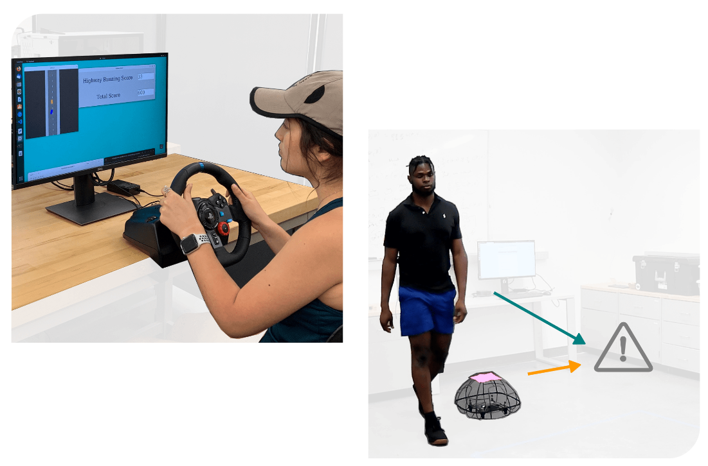
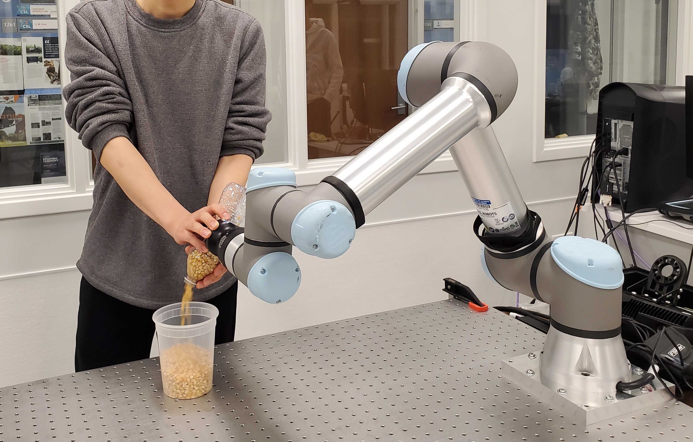

About

Ye-Ji Mun
I am a Ph.D. candidate at the University of Illinois Urbana-Champaign (UIUC) in the Electrical and Computer Engineering department. Prior to joining UIUC, I received my B.S. in Electronics Engineering at Ewha Womans University, Seoul, South Korea in 2018. My research is driven by a vision that safe, trustworthy robots should perceive beyond their onboard sensors and make adaptive decisions grounded in a deep understanding of human behavior.
Education & Experience
Education
Ph.D. in Electrical & Computer Engineering
2019 - current
University of Illinois Urbana-Champaign, Illinois, United States
Academic Advisor : Prof. Katherine Driggs-Campbell
Bachelor Science in Electronics Engineering
2014 - 2018
Ewha Womans University, Seoul, South Korea
Exchange student in Electrical Engineering
Spring 2016
Temple University, Philadelphia, USA
Exchange student in Electrical Engineering
Fall 2015
San Diego State University, San Diego, USA
Research Experience
Human Centered Autonomy Lab, Research Assistant
Aug.2019 - Present
University of Illinois Urbana-Champaign, Illinois, United States
Information Coding and Processing Lab, Research Assistant
Oct.2017 - June 2019
Ewha Womans University, Seoul, South Korea
Work Experience
Honda Research Institute, Research Intern
May - Aug. 2024
San Jose, CA, United States
-
Built a multi-agent deep RL model with an adaptive intention-sharing mechanism, enabling robots to handle both cooperative and adversarial interactions in decentralized settings.
Research

Occlusion-Aware Autonomous Navigation Using People as Sensors
How do robots reason about what they can’t see, like pedestrians hidden in blind spots? We enable robots to infer hidden road users from partial observations by training generative world models end-to-end with deep RL for safer, proactive planning.
ICRA 2023 [Paper1] [Video1] [Code1]
ICRA 2022 [Paper2] [Video2] [Code2]
Media 2022 [TechXplore]

Towards Robots that Influence Humans over Long-Term Interaction
How can robots adapt when human behavior changes over time? We develop adaptive interaction controllers that integrate psychological modeling to continually update the robot’s understanding of human drivers and choose actions that sustain effective, human-aware influence over long-term interactions.
Preprint 2025 [Paper1]
ICRA 2023 [Paper2] [Video]

Human-Robot Collaboration in Manufacturing Assembly
How can robots effectively and safely collaborate with human workers? We develop a hierarchical intention-tracking framework for real-time adaptation to dynamic, multi-level human intentions.
Preprint 2025 [Paper1] [Video]
ICRA 2023 [Paper2] [Video]
CASE 2023 [Paper3] [Video]
CASE 2022 [Paper4]
Preprint 2023 [Paper5]

Learning Task Skills and Goals Simultaneously from Physical Interaction
How can robots learn both what a human wants and how to execute it through physical interaction? We propose a unified framework that infers long-term task goals from physical interaction while learning reusable manipulation skills, enabling adaptive behavior aligned with human objectives.
CASE 2023 [Paper]

CNN Defending against Adversarial Attacks
How can perception remain reliable under adversarial perturbations? We design and evaluate robust CNN architectures that maintain stable recognition under perturbations, strengthening the reliability of learned perception.
IEEE Access 2019 [Paper1]
Proceedings of the Korean Society of Broadcast Engineers Conference 2018 [Paper2]
Skills
- Programming Languages: Python, C++/C, Matlab, HTML, LaTeX
- Software: PyTorch, Tensorflow, OpenAI Gym, ROS, MoveIt, Gazebo, Docker
- Hardware: GEM e2, e4, Turtlebot 2i, UR5e, Kinova Gen3

GEM e2 & e4
Turtlebot 2i

UR5e

Kinova Gen3
Teaching
- ECE484:Principle of Safe Autonomy (TA): University of Illinois Urbana-Champaign, Fall 2023 - Spring 2024
- Samsung Dream Class Middle School (Tutor): Siheung, South Korea, Fall 2016
- Korean Elementary Class (TA): San Diego State University, Fall 2015
Honor
- Kwanjeong Overseas Scholarship: Seoul, South Korea, 2019 - 2023
- ICRA Travel Grant: IEEE, 2023
- Global Young Scientist Summit Participant: Singapore, 2023
- Excellent Student Scholarship: Ewha Womans University, 2014-2015, 2017
- WeTech Qualcomm Global Scholars Program: Seoul, South Korea, 2017
- Qualcomm Scholarship Program: Seoul, South Korea, 2015
Publication
Preprints
[1] Hierarchical Intention Tracking with Switching Trees for Real-Time Adaptation to Dynamic Human Intentions during Collaboration
ArXiv, 2025
Z. Huang*,Y.-J. Mun*, F. C. Pouria, and K. Driggs-Campbell (*equal contribution)
[2] A Unified Framework for Robots that Influence Humans over Long-Term Interaction
ArXiv, 2025
S. Sagheb, S. Parekh, R. Pandya, Y.-J. Mun, K. Driggs-Campbell, A. Bajcsy, and D. P. Losey
[3] User-Friendly Safety Monitoring System for Manufacturing Cobots
ArXiv, 2023
Y.-J. Mun, Z. Huang, H. Chen, Y. Niu, Ha. You, D. L. McPherson, and K. Driggs-Campbell
Conference Papers
[1] Occlusion-Aware Crowd Navigation Using People as Sensors
International Conference on Robotics and Automation (ICRA), IEEE 2023
Y.-J. Mun, M. Itkina, S. Liu, and K. Driggs-Campbell
[2] Hierarchical Intention Tracking for Robust Human-Robot Collaboration in Industrial Assembly Task
International Conference on Robotics and Automation (ICRA), IEEE 2023
Z. Huang*,Y.-J. Mun*, X. Li, Y. Xie, N. Zhong, W. Liang, J. Geng, T. Chen, and K. Driggs-Campbell (*equal contribution)
[3] Towards Robots that Influence Humans over Long-Term Interaction
International Conference on Robotics and Automation (ICRA), IEEE 2023
S. Sagheb, Y.-J. Mun, N. Ahmadian, B. A. Christie, A. Bajcsy, K. Driggs-Campbell, and D. P. Losey
[4] Learning Task Skills and Goals Simultaneously from Physical Interaction
International Conference on Automation Science and Engineering (CASE), IEEE 2023
H. Chen*,Y.-J. Mun*, Z. Huang, Y. Niu, Y. Xie, D. L. McPherson, and K. Driggs-Campbell (*equal contribution)
[5] Towards Safe Multi-Level Human-Robot Interaction in Industrial Tasks
International Conference on Automation Science and Engineering (CASE), IEEE 2023
Z. Huang,Y.-J. Mun, H. Chen, X. Li, Y. Xie, N. Zhong,, Y. Niu, X. Li, N. Zhong, H. You, D. L. McPherson, and K. Driggs-Campbell
[6] Specifying Target Objects in Robot Teleoperation Using Speech and Natural Eye Gaze
International Conference on Humanoid Robots (Humanoids), IEEE 2023.
Y.-C. Chang, N. Gandi, K. Shin, Y.-J. Mun, K. Driggs-Campbell, and J. Kim
[7] Seamless Interaction Design with Coexistence and Cooperation Modes for Robust Human-Robot Collaboration
International Conference on Automation Science and Engineering (CASE), IEEE, 2022
Z. Huang*,Y.-J. Mun*, X. Li, Y. Xie, N. Zhong, W. Liang, J. Geng, T. Chen, and K. Driggs-Campbell (*equal contribution)
[8] Multi-agent variational occlusion inference using people as sensors
International Conference on Robotics and Automation (ICRA), IEEE 2022
M. Itkina, Y.-J. Mun, K. Driggs-Campbell, and M. J. Kochenderfer
[9][Oral] Correcting misclassified image features with convolutional coding
In Proceedings of the Korean Society of Broadcast Engineers Conference (pp. 11-14)
Y.-J. Mun, N. Kim, J. Lee, and J. W. Kang
Journal
[1] Ensemble of Random Binary Output Encoding for Adversarial Robustness
IEEE Access, 7, 124632-124640.
Y.-J. Mun and J. W. Kang
Workshops
[1] Insights from an Industrial Collaborative Assembly Project: Lessons in Research and Collaboration
Cobots and WotF, International Conference on Robotics and Automation (ICRA), IEEE, 2022
1. T. Chen, Z. Huang, J. Motes, J. Geng, Q. M. Ta, H. Dinkel, H. Abdul-Rashid, J. Myers, Y.-J. Mun, W. Lin, Y. Huang, S. Liu, M. Morales, N. M. Amato, K. Driggs-Campbell, and T. Bretl
[2] Occlusion-aware crowd navigation using people as sensors
16th Women in Machine Learning Workshop (WiML), NeurIPS 2021
Y.-J. Mun, M. Itkina, and K. Driggs-Campbell
[3] Multi-agent variational occlusion inference using people as sensors
Bay Area Robotics Symposium (BARS), 2021
M. Itkina, Y.-J. Mun, and K. Driggs-Campbell
[4] Safe crowd navigation in the presence of occlusions
15th Women in Machine Learning Workshop (WiML), NeurIPS 2020
Y.-J. Mun, M. Itkina, and K. Driggs-Campbell
[5] Variational occlusion inference using people as sensors
15th Women in Machine Learning Workshop (WiML), NeurIPS 2020
M. Itkina, Y.-J. Mun, and K. Driggs-Campbell